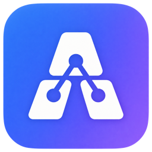

AGENT BOARDYour agents.
One clear view.
One clear view.
The local menu bar and workstream board for Claude Code and Codex. See what is running, what needs you, and what to pick up later.
✦ Agent Board
▦ Workstreams
◫ Sessions
☆ Continue later
Today, at a glance
Working
Draft project outlineClaude Code · in progress
Explore data questionCodex · in progress
Your turn
Review first draftFinished · waiting for you
Continue later
Follow up on notesStarred for later
LESS TAB HUNTING. MORE MOMENTUM.
Spot the signalFind Working, Your turn, and Check me.
Keep the threadLink resumed sessions and star follow-ups.
Own “done”Review suggestions; mark completion yourself.
Try it in 4 steps
PUBLIC GITHUB1 Download or clone2 Accessibility → On3 Open Agent Board4 Review sessions
git clone https://github.com/stellassx94/agent-board.git cd agent-board && sh macos/build.sh open "build/Agent Board.app"
Required before first use: System Settings → Privacy & Security → Accessibility → add Agent Board and switch it on. “Open Anyway” is a separate macOS step.
YOUR 10-MINUTE MISSION →Find a session, star a follow-up, link a resume, mark done. Tell us what felt confusing.